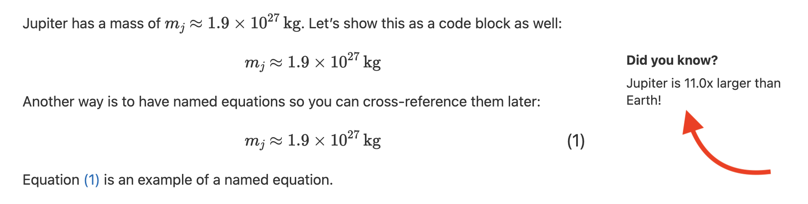
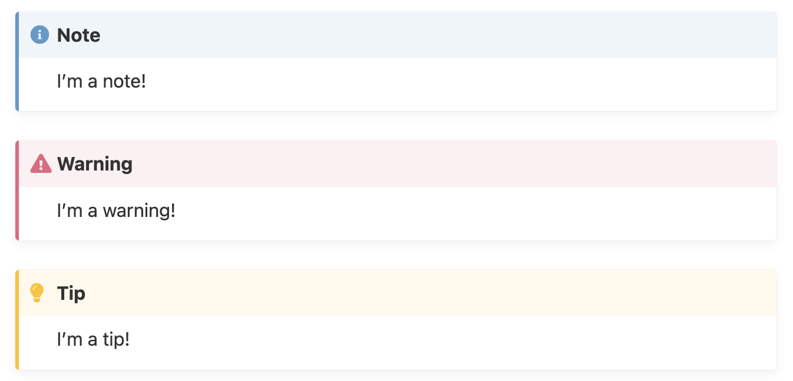
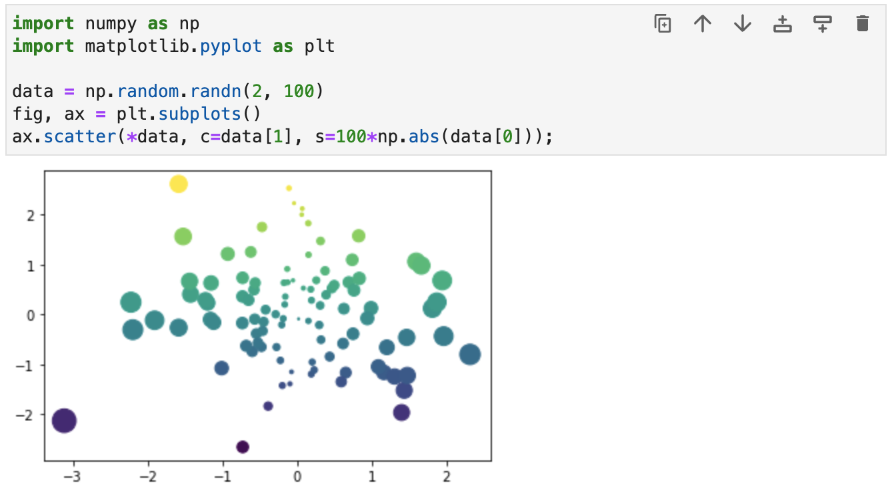
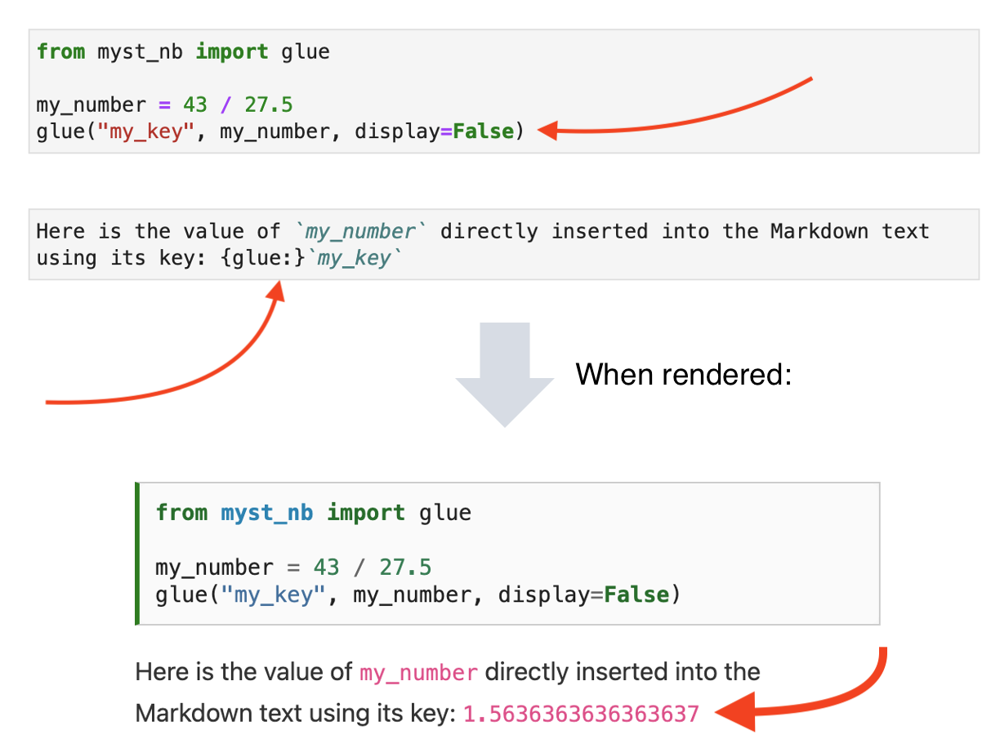
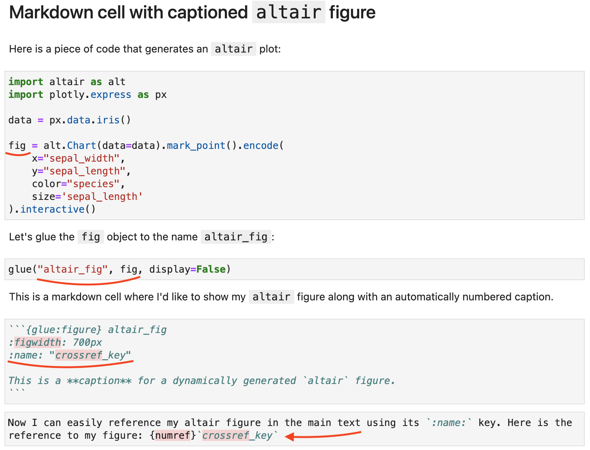

Margin content
Margin content is similar to footnotes in a conventional book:
```{margin} Did you know?
Jupiter is 11.0x larger than Earth!
```
Rendered:

Admonitions
Admonitions draw attention to important information:
```{note}
I'm a note!
```
{note} can be replaced with {warning}, {tip}, {danger} and so on.
This is how these admonitions will show up:

Showing and hiding code and its output

We need to edit the cell’s metadata to tell Jupyter Book to show/hide the code or its output.
“Gluing” variables in your notebook
Using the glue prefix, you can:
- Bind a variable to a name (called a “key”)
- Reference that variable from your page’s content

“Gluing” variables in your notebook
